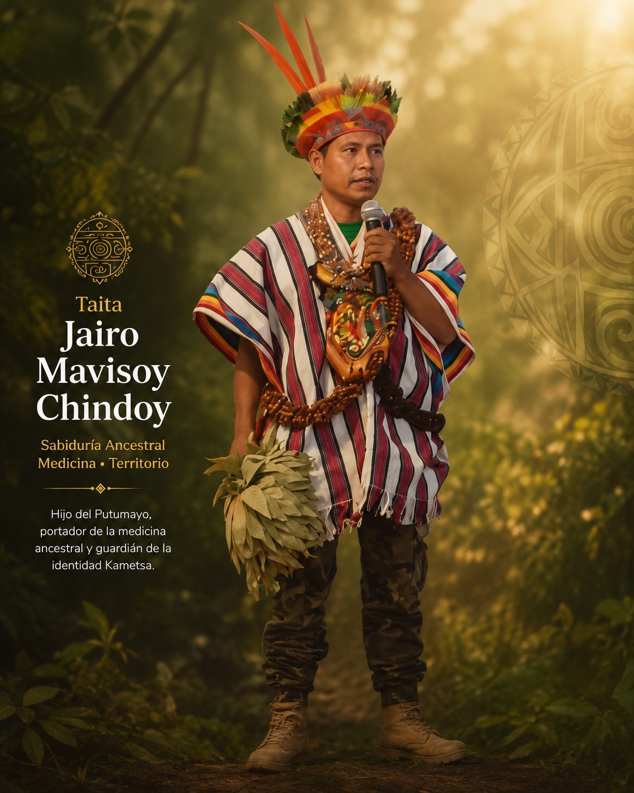
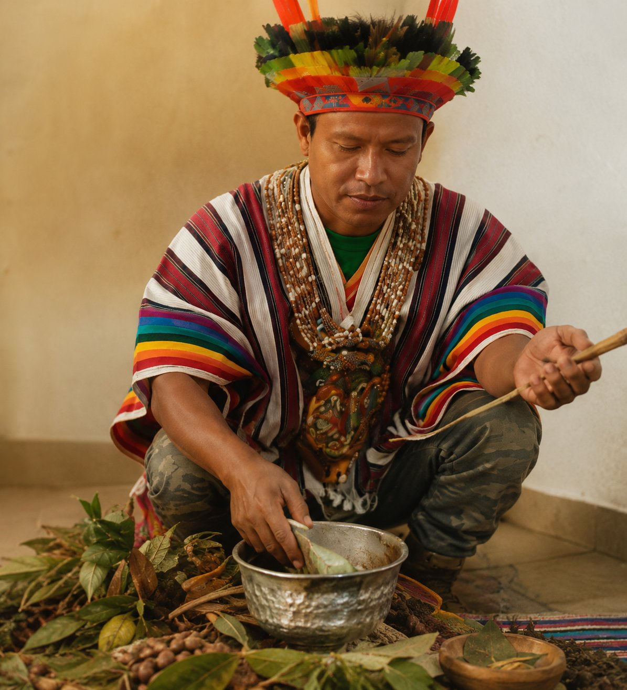

Putumayo · Comunidad Kametsa · Bajo Putumayo
Hijo del Putumayo, portador de la medicina ancestral y guardián de la identidad Kametsa.
Sobre el taita
Nací en el Putumayo, en el corazón del territorio de la comunidad Kametsa en el Bajo Putumayo. Esta tierra no es solo el lugar donde nací — es la fuente de todo lo que soy y de todo lo que ofrezco.
Desde mi infancia, mi camino ha sido acompañado por familias de taitas y curanderos que me guiaron en el aprendizaje y el servicio a la vida. La medicina no fue algo que estudié — fue algo que viví desde adentro, desde el territorio, desde la comunidad.
He participado en cargos de liderazgo en la comunidad, caminando junto a mi pueblo en la recuperación de nuestra identidad, el cuidado del territorio y la sanación integral de cuerpo, mente, espíritu y comunidad.

La medicina es el puente que nos recuerda quiénes somos y de dónde venimos.
— Taita Jairo Mavisoy Chindoy · Comunidad Kametsa
Su camino
El recorrido del taita no sigue una línea recta. Es una espiral que siempre regresa al centro: el territorio, la comunidad y la medicina.
Origen
Nace en el Bajo Putumayo, en el territorio de la comunidad Kametsa. Desde los primeros años, la naturaleza, la lengua y los saberes ancestrales son su entorno cotidiano y su primera escuela.
Formación
Su aprendizaje en la medicina tradicional se forja junto a familias de taitas y curanderos del territorio, en un proceso de transmisión oral y vivencial de los saberes ancestrales del pueblo Kametsa.
Liderazgo
Asume cargos de liderazgo comunitario, trabajando en la restauración de la estructura política y los derechos del pueblo Kametsa, y en la recuperación de la lengua e identidad del territorio.
Hoy
Continúa su trabajo desde tres frentes: rescatar la identidad territorial, construir la Casa de Medicina para el compartir de saberes, y empoderar emprendimientos ancestrales que dignifiquen las raíces de los pueblos nativos.
Lo que lo mueve
Los valores que sostienen cada paso del taita, cada círculo de palabra, cada ceremonia y cada acto de transmisión.
La tierra no es un recurso. Es un ser vivo con memoria, con lengua y con medicina propia que debe ser honrada y cuidada.
Sanar en colectivo. La comunidad es el tejido que sostiene a cada individuo y a cada generación del pueblo Kametsa.
La medicina ancestral como puente entre el pasado y el presente, entre el ser humano y la naturaleza, entre lo visible y lo sagrado.
Recuperar la lengua Kametsa es recuperar la memoria viva de un pueblo y su manera de ver, nombrar y habitar el mundo.
Contacto
Para información sobre ceremonias, espacios de medicina, círculos de palabra y otros encuentros.
WhatsApp · Llamada
+57 350 684 6009
@taita_jairomavisoy
Origen
Putumayo, Colombia
"Que la medicina te muestre si este es tu momento. Cuando el llamado es verdadero, el camino se abre."